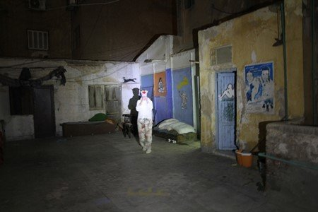
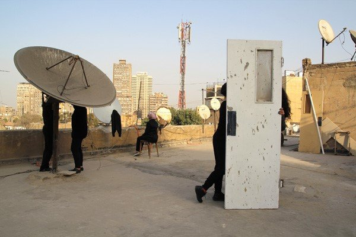
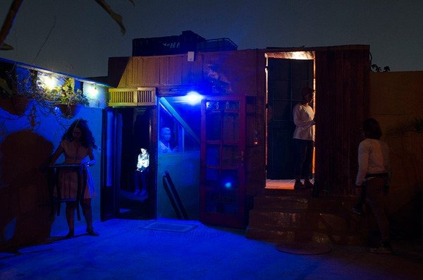

Originally published in Aperture Issue 224, "Sounds" on 22 September 2016
By Ismail Fayed
Setting: A rooftop that looks like a spacecraft. A glowing staircase with orange light. A repository of clutter. A jungle of satellite dishes. Figures appear. Women dressed in black pose within scenes of their own creation.

Cairo Bats, Act 1: The Roof (Downtown), 2015
They are the Cairo Bats, a collective of female artists who gather to create staged photographs. For Act 1: The Roof (2015), their recent project at Cairo's Contemporary Image Collective (CIC), the Cairo Bats presented a sequence of performative interventions that tackled the multifaceted potential of urban structures. It's not the first time that artists working in Cairo chose the city and its landscape as points of departure. Since the early 2000s, with the rise of independent art spaces such as Townhouse Gallery and CIC, the complex relationships that humans have with the city have been a recurring exhibition theme. (Established in 2004, CIC is one of the few independent platforms in Egypt that is entirely dedicated to image-based practices.)
In a city of twenty-two million people, where up to 40 percent of the population live in some kind of informal housing, residents sometimes face no other choice but to move to the rooftops. As a result, the roof has emerged as one of Cairo's many urban typologies. Driven by the postindependence euphoria of industrialization and centralization, and coupled with a lack of basic housing and parallel urban planning, the city morphed into organic, urban forms ranging from squatter settlements to repurposed rooftops. And, in that parallel urban landscape, we encounter a unique experience of urban life—an experience central to the work of the Cairo Bats.

Cairo Bats, Act 1: The Roof (Zamalek), 2015
In Act 1: The Roof, some of the collective's images are purely scenographic, using the existing elements of a space to show its many visual possibilities. The intense contrasts between light and shadow, and multiple degrees of darkness, almost reach a baroque chiaroscuro in one work where spotlights are used to pick out the presence of three figures against the dark rooftop. Other images show more complex interventions and appropriations, as in the juxtaposition of satellite dishes with domestic interiors and household objects.
But the unusual presence of the artists—either in person or in the symbolic gesture of clothing left behind—highlights the absence of women in the urban landscape of Cairo. It's a radical or even dangerous intervention. The presence of women in public spaces has been one of the most contested social phenomena in Egypt in the past three decades. Since independence in 1952, the increased involvement and visibility of women has been accompanied by a serious backlash from the conservative guardianship of a patriarchal system that dominates the country's social fabric. The roof, being a liminal space somewhere between private and public, is a critical stage on which to dramatize these tensions, and to consider how and where women should be visible and active.

Cairo Bats, Act 1: The Roof, 2015, staged photography performance
The imaginative possibilities of what a rooftop can hold reach further in the group's images of vegetation. Cairo is not known for its many green spaces, and the dire lack of greenery is part of the ecological makeup of the city's landscape. With close-up photographs of flowers, shrubs, and leafy greens, the Cairo Bats divert our imagination to the fantastical.
Act 1: The Roof becomes a visual exploration of places fraught with disorder, informality, organic forms, and the marginalized of society. The play on darkness and light, the ambiguous choreography, and the bodies that situate themselves in relationship to the city itself, as well as to its history both past and present, make for an artistic vision that confronts Cairo, investigating possibilities of engagement beyond the limits of chaos.